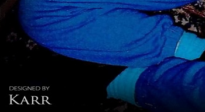
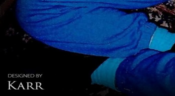

Navigate Pages Below
JonBenet Ramsey
Arrested for Her Murder in 2006


In 2006, I was arrested for the murder, kidnapping, and sex assault of six year old JonBenet Ramsey and extradited from Bangkok to Boulder Colorado. My arrest was based on my account of the night of her death that corroborated with physical evidence withheld from the public by the coroner and law enforcement from 1996 to 2006. (Photography Designed by John Mark Karr) TAP TO VISIT THIS PAGE
Official Statements
Released Since 2016


Statements I have released since 2016 can be found on this page. When I have anything I consider important to say, I release a statement here. When and if I find out there are lies circulating about me in the media or I have something to say in response to other issues in the media related to me, I release those statements here. (Photography Designed by John Mark Karr) TAP TO VISIT THIS PAGE
Polly Hannah Klaas
The Disastrous Abduction that Killed Her


 


In 2019, a contact informed me that they were interviewed by the FBI for seven hours in 2006. They stated the interview was as much about Polly Klaas as JonBenet Ramsey. The FBI played numerous recorded calls from 2001 wherein I discussed Klaas in depth with an informant. The FBI stated that I had discussed details of Klaas with her killer in multiple conversations. I have a message for the FBI and Polly Klaas's killer in this October 2023 article. (Photography Designed by John Mark Karr) TAP TO VISIT THIS PAGE
Rise Up Sweet Children
Tale of Two Cults


In 2007, I was investigated by the FBI for planning to organise a sex cult involving teenage girls. A computer containing the alleged plan was seized by the FBI. In 2010, nineteen year old Samantha Spiegel interviewed with mainstream media for two months wherein she said I was the leader of a sex cult. Her account was filled with stories of the sexual abuse of little girls and a death squad that would kill on my command. TAP TO VISIT THIS PAGE
Lady Amelia Windsor
Christian Dior - Paris 2018


Lady Amelia Windsor modeling at the Christian Dior show in Paris in 2018. Amelia is the granddaughter of Prince Edward, Duke of Kent - the first cousin to the late Queen Elizabeth II. Amelia is the youngest of three siblings. She is the daughter of George Windsor, Earl of St. Andrews, and Sylvana Tomaselli, a Canadian academic and historian. She has modeled for major brands including Dolce & Gabbana and Christian Dior. She has also done some fashion collaborations as a designer. (Harpers Bazaar, Stephane Cardinale, Photography Designed by John Mark Karr)